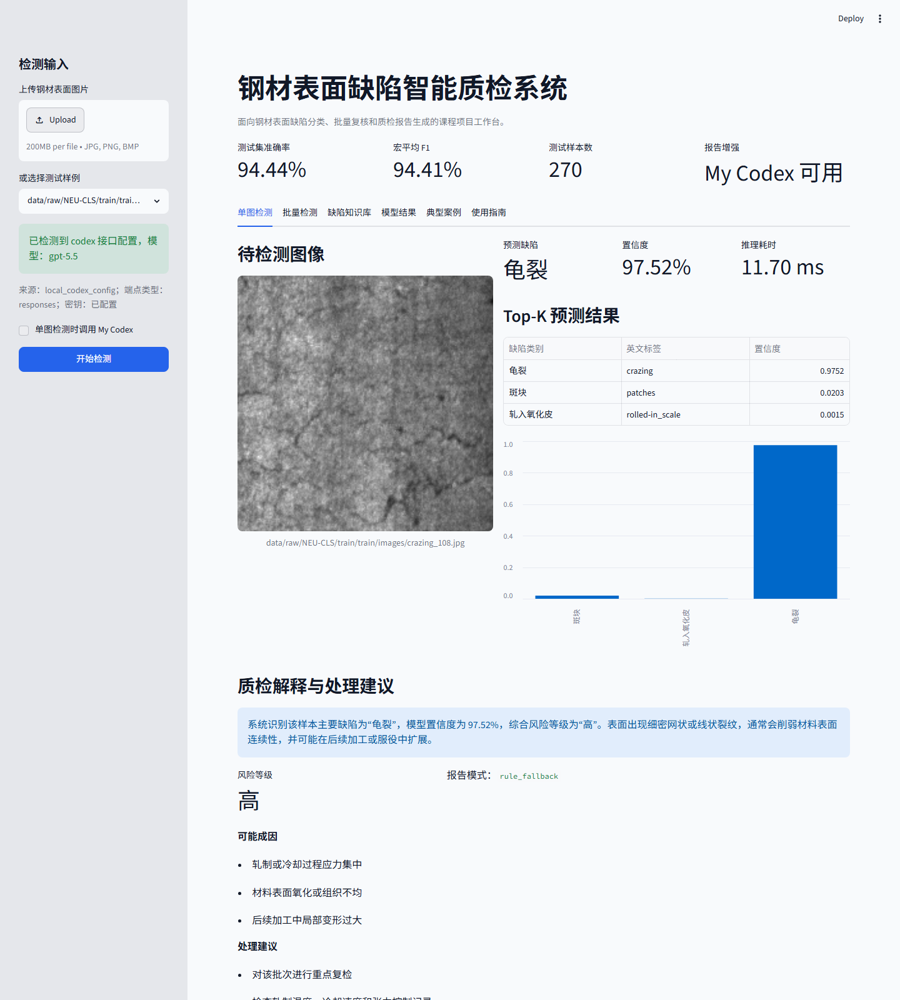
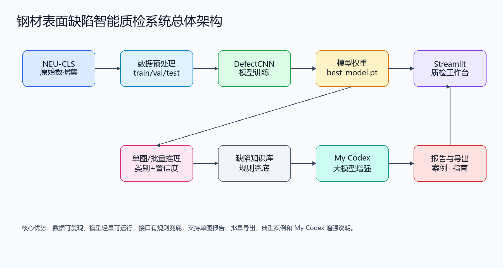
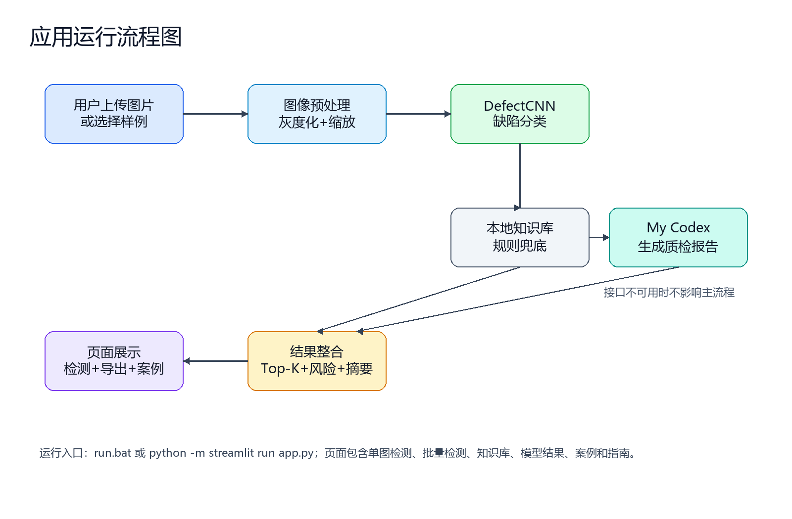

94.44%测试集准确率
94.41%宏平均 F1
270测试样本数
6 类表面缺陷
项目亮点
深度学习识别
使用 PyTorch 构建轻量 CNN，对龟裂、夹杂、斑块、麻点表面、轧入氧化皮和划痕进行分类。
质检报告生成
根据模型输出和缺陷知识库生成风险等级、可能成因和处理建议，并可接入 My Codex 增强报告。
质检工作台
Streamlit 页面支持单图检测、批量检测、模型结果、缺陷知识库、典型案例和使用指南。
页面截图
GitHub Pages 托管的是静态展示页。完整交互式系统需要在本地运行 Streamlit。

系统架构

运行流程

本地运行
克隆仓库后，在项目根目录运行：
cd 03_项目代码包\项目名称_团队编号
pip install -r requirements.txt
python -m streamlit run app.py浏览器打开 http://localhost:8501。仓库包含 6 张轻量示例图和已训练模型权重，可用于页面演示；完整 NEU-CLS 原始数据集未纳入仓库，需要按数据集说明自行下载。
典型案例
- 生产线龟裂抽检：快速识别高风险裂纹并生成复检建议。
- 异常批次快速复核：批量检测多张图片，导出 CSV 和摘要。
- 质检报告辅助撰写：将模型结果转化为可读的质检说明。